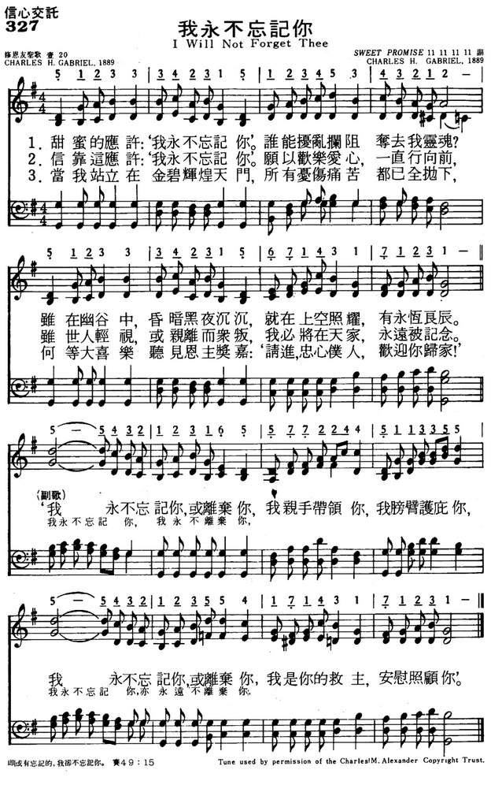

|
|
|
|
1. Sweet is the promise I will not forget thee,
Nothing can molest or turn my soul away;
E’en though the night be dark within the valley,
Just beyond is shining an eternal day.
Refrain
I will not forget thee or leave thee,
In My hands I’ll hold thee,
In My arms I’ll fold thee,
I will not forget thee or leave thee;
I am thy Redeemer, I will care for thee.
2. Trusting the promise I will not forget thee,
Onward I will go with songs of joy and love,
Though earth despise me,
Though my friends forsake me,
I shall be remembered in my home above. [Refrain]
3. When at the golden portals I am standing,
All my tribulations, all my sorrows past;
How sweet to hear the blessèd proclamation,
Enter, faithful servant, welcome home at last. [Refrain]
Source: The Cyber
Hymnal #3181
|
327我永不忘记你
1.甜蜜的应许：我永不忘记你’。
谁能扰乱拦阻夺去我灵魂？
虽在幽谷中，昏暗黑夜沉沉，
就在上空照耀，有永�琩}辰。
"我永不忘记你，或离弃你，
我亲手带领你，我膀臂护庇你，
我永不忘记你，或离弃你，
我是你的救主，安慰照顾你。"
2.信靠这应许：我永不忘记你。
愿以欢乐爱心，一直行向前，
虽世人轻视，或亲离而众叛，
我必将在天家，永远被记念。
3.当我站立在金碧辉煌天门，
所有忧伤痛苦都已全抛下，
何等大喜乐听见恩主奖嘉：
请进，忠心仆人，欢迎你归家！
|
|
https://www.mred365.cn/szxg/7330.html

https://hymnary.org/hymn/VoP1947/page/230
 |
|
|
|
LX1885
I Will Not Forget Thee
327我永不忘记你
|
Short Name: |
Chas. H. Gabriel |
|
Full Name: |
Gabriel, Chas. H. (Charles Hutchinson),
1856-1932 |
|
Birth Year: |
1856 |
|
Death Year: |
1932 |

Pseudonyms: C. D. Emerson,
Charlotte G. Homer, S. B. Jackson, A. W. Lawrence, Jennie Ree
=============
For the first seventeen years of his life Charles Hutchinson Gabriel (b.
Wilton, IA, 1856; d. Los Angeles, CA, 1932) lived on an Iowa farm, where
friends and neighbors often gathered to sing. Gabriel accompanied them on
the family reed organ he had taught himself to play. At the age of sixteen
he began teaching singing in schools (following in his father's footsteps)
and soon was acclaimed as a fine teacher and composer. He moved to
California in 1887 and served as Sunday school music director at the Grace
Methodist Church in San Francisco. After moving to Chicago in 1892, Gabriel
edited numerous collections of anthems, cantatas, and a large number of
songbooks for the Homer Rodeheaver, Hope, and E. O. Excell publishing
companies. He composed hundreds of tunes and texts, at times using
pseudonyms such as Charlotte G. Homer. The total number of his compositions
is estimated at about seven thousand. Gabriel's gospel songs became widely
circulated through the Billy Sunday-Homer Rodeheaver urban crusades.
Bert Polman
简介（一）
（来源：《岁首到年终》）
妇人焉能忘记她吃奶的婴孩，不怜恤她所生的儿子。即或有忘记的，我却不忘记你。（ 赛 49:15 ）
应许是否宝贵，在乎那应许可不可靠。虽然应许是出于人的好意，如果不能实现，就成了空的，有何益处？所以无论所应许的是大是小，只要那应许靠得住，就有价值。怎样的应许才靠得住呢？那就要看给应许的是谁，他有没有能力，是否出于甘心。应许如果是出于诚意，而又有成就的能力，那应许是可靠的。
人的应许，往往靠不住。因为人善变，例如婚前「爱到海枯石烂」之盟誓因经不起时间及环境的考验破灭。或因人无能力实现诺言，而使应许落空。我们的神所应许的，「不论有多少，在基督都是是的。」（
林后 1:20 ）祂是信实的，不背乎自己。为何祂不会忘记我们？因为我们是属祂的，也因为祂满有怜恤。
这首「我总不忘记你」的词与曲都为 Charles H. Gabriel 所作。他是20世纪初期美国最具影响力及福音诗歌作家。 1856 年 8 月 18
日生于爱俄华州 Wilton ，他的父亲有歌唱恩赐，常开放家庭供唱诗班以诗歌交谊团契，并担任领唱。这对作者而言，是一个塑造成圣诗作家的美好环境。估计其作品有
8000 首圣诗，包括主编 35 本不同的福音诗集， 8 本主日学圣诗歌， 7 本男声合唱集， 6 本女声合唱集， 10 本儿童诗集， 19 本诗班赞美诗集，
20 本诗班清唱剧， 41 本圣诞清唱剧， 10 本儿童清唱剧以及许多乐器谱，是一位多产作家。
1 主宝贵应许：＂我总不忘记你＂，无何事能叫我与救主分离；
纵然要经过极黑暗的幽谷，那边却是永远光明的美地。
2 信靠主应许：＂我总不忘记你＂，我今勇往前行高唱喜乐歌；
世人虽藐视，朋友亦都远离，在天上荣美家永不被忘记。
（副歌）
我总不忘记你，不离开你，我手永远托住，我臂永远扶持；
我总不忘记你，不离开你，我是你救赎主，必然看顾你。
＊耶稣基督有爱和能力，已经供应了我需要在孤儿身上的一切，祂将会以同样不变的爱和能力供给我将来所需的一切。 ── 慕勒
"Can
a woman forget her suckling child, that she should not have compassion…yet will
I not forget thee" (Isa. 49.15)
INTRO.:
A hymn which emphasizes that God has promised not to forget
His people is "I Will Not Forget Thee" (#502 in Hymns
for Worship Revised, #251 in Sacred
Selections for the Church). The text was written and the tune (Sweet
Promise) was composed both by Charles Hutchinson Gabriel (1856-1922). It was
first published in the 1889 Triumphant
Songs compiled by Edwin O. Excell. Originally owned by Excell,
the copyright was renewed in 1917 by the Rodeheaver Co. Gabriel produced both
words and music for such well known gospel songs as "Glory For Me," "God Is
Calling the Prodigal," "He Lifted Me," "I Stand Amazed," "Where the Gates Swing
Outward Never," "More Like the Master," "Only a Step," and "Send the Light," and
provided either words or music for "Come to the Feast," "Harvest Time," "Higher
Ground," "His Eye Is on the Sparrow," "An Evening Prayer," "Jesus, Rose of
Sharon," "Only in Thee," "Since Jesus Came into My Heart," and "The Way of the
Cross Leads Home."
Among hymnbooks published by members of the Lord’s church during the twentieth
century for use in churches of Christ, "I Will Not Forget Thee," often
identified by its first line "Sweet Is the Promise," appeared in the 1921 Great
Songs of the Church (No. 1) and the 1937 Great
Songs of the Church No. 2 both edited by E. L. Jorgenson; the
1935 Christian
Hymns (No. 1), the 1948 Christian
Hymns No. 2, and the 1966 Christian
Hymns No. 3 all edited by L. O. Sanderson; and the 1963 Abiding
Hymns edited by Robert C. Welch. Today, it is found in the
1971 Songs
of the Church and the 1990 Songs
of the Church 21st C. Ed. both edited by Alton H. Howard; and
the 1992 Praise
for the Lord edited by John P. Wiegand; in addition to Hymns
for Worship, Sacred
Selections, and the 2007 Sacred
Songs of the Church edited by William D. Jeffcoat.
The song reminds us that we can trust in God’s promise never to forget His
people.
I. Stanza 1 centers on God’s promise
"Sweet is the promise, ‘I will not forget thee;’ Nothing can molest or turn my
soul away.
E’en though the night be dark within the valley, Just beyond is shining an
eternal day."
A. God has always promised never to leave or forsake His people: Deut. 31.5-6,
Heb. 13.5-6
B. Therefore, nothing that would try to molest us or turn our souls away should
cause us to fear: Matt. 10.28
C. Because of this promise, we can always be motivated to move forward because
we know that just beyond is shining an eternal day: Prov. 4.18
II. Stanza 2 centers on our trust of God’s promise
"Trusting the promise, ‘I will not forget thee,’ Onward will I go with songs of
joy and love;
Though earth despise me, Though my friends forsake me, I shall be remembered in
my home above."
A. We must trust the promises that God has made to us: Ps. 37.3-5, Prov. 3.5-6
B. With such a trust, we can rejoice always in the Lord: Phil. 4.4
C. The reason is that because of our trust we can know that God will remember
us, both here and in the home above: Mal. 3.16, Heb. 6.10
III. Stanza 3 centers on our receiving the fulfilment of God’s promise
"When at the golden portals I am standing, All my tribulations, all my sorrows
past,
How sweet to hear the blessed proclamation, ‘Enter, faithful servant, welcome
home at last.’"
A. The hope of the Christians is at the end of the way to stand at the golden
portals (gates) to the eternal city: Rev. 21.10-12
B. Then all our tribulations and sorrows will be past, and God shall wipe away
all tears: Rev. 21.1-4
C. At that time, we shall receive the fulfilment of God’s promise by hearing
the Lord say, "Well done, thou good and faithful servant; enter in": Matt. 25.21
CONCL.:
The chorus continues to focus our attention on the promise of God not to forget
or leave us.
"’I will not forget thee or leave thee; In my hands I’ll hold thee, in my arms
I’ll fold thee.
I will not forget thee or leave thee; I am thy Redeemer, I will care for thee.’"
Personally, I have always found this a very comforting song. In this life, I
have had times when things of this world molested me and tried to turn my soul
away, when people of earth seemed to despise me and even friends forsook me, and
when I experienced my share of tribulation and sorrow. But it helps me to know
that I can put my trust in a God who says, "I Will Not Forget Thee."
As I am writing this I am waiting for a friend who had told us
that he would visit with us this morning. But it is now two hours past
the time when he said he would stop by. I assume that he must have
forgot. It happens. Several months ago a friend promised to take care
of making arrangements and securing something that I really needed for a
program I had agreed to lead. Despite several reminders, he forgot to
follow through until the last minute. And then, when he finally
remembered to fulfill his promise to me, it was too late and he wasn't
able to do it. That left me stuck at the last minute and forced me to
change my plans. Even our best friends can forget their promises to us.
It happens.
The older I get the more I am learning to write everything down. I need
a calendar and I need "to do" lists, otherwise it is easy for me to
forget. Sometimes forgetting can be caused by serious physical
problems. I think dementia is a frightful thing and we have no control
over it. It is heartbreaking to see loved ones no longer recognize
their mates because of devastating mental changes. But forgetting isn't
just limited to older people. As a teacher for 39 years I often had
students who forgot assignments or materials they needed for class. A
college friend of mine forgot and left his mother several times when
they went to church gatherings. It happens. It can be bad and
embarrassing when you forget something. And it can really hurt when
somebody forgets you or forgets to do something they had promised to do
for you. But this week's hymn choice reminds us of One who never
forgets us - the Lord Jesus Christ.
He has promised never to leave us or forsake us. And He never has. He
continues to guide us and strengthen us and provide the wisdom that we
need. And He has gone to prepare a special home for us and has promised
to come back for us. He hasn't forgotten us. I don't know what event
may have stirred Charles H. Gabriel (1856 - 1932) to pen these words in
1889, but he was right on. The chorus reminds us "I will not forget thee
or leave thee; In My hands I'll hold thee, in My arms I'll fold thee; I
will not forget thee or leave thee; I am thy Redeemer, I will care for
thee." What a tremendous reminder that we can depend upon our Redeemer
who loves us and protects us and will never leave us or forget us.
Maybe you are lonely or discouraged right now. Meditate upon these
words and realize that you are not forgotten. You may feel very
insignificant, but you are loved and are valued by the Father. Reflect
upon this truth and be encouraged this week
{kind=link}
{kind=link}